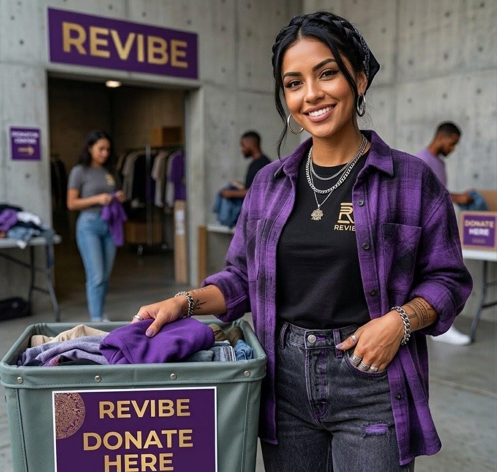
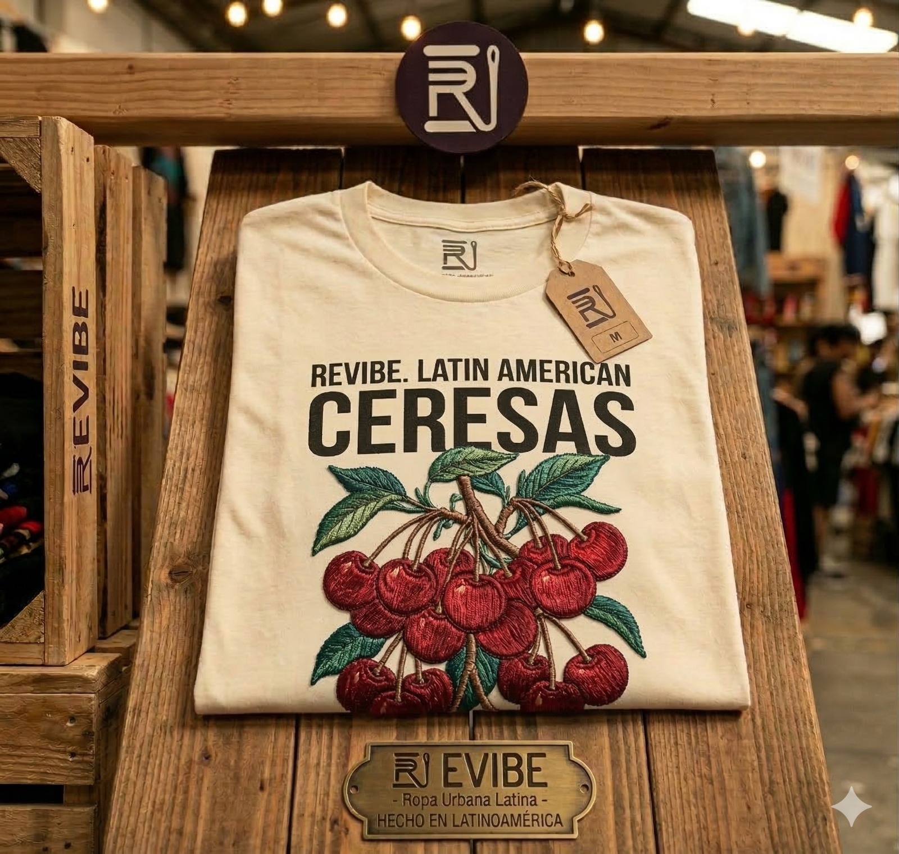
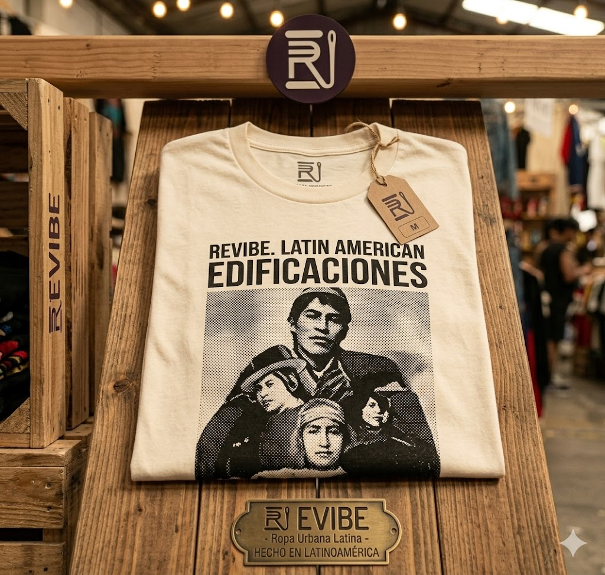
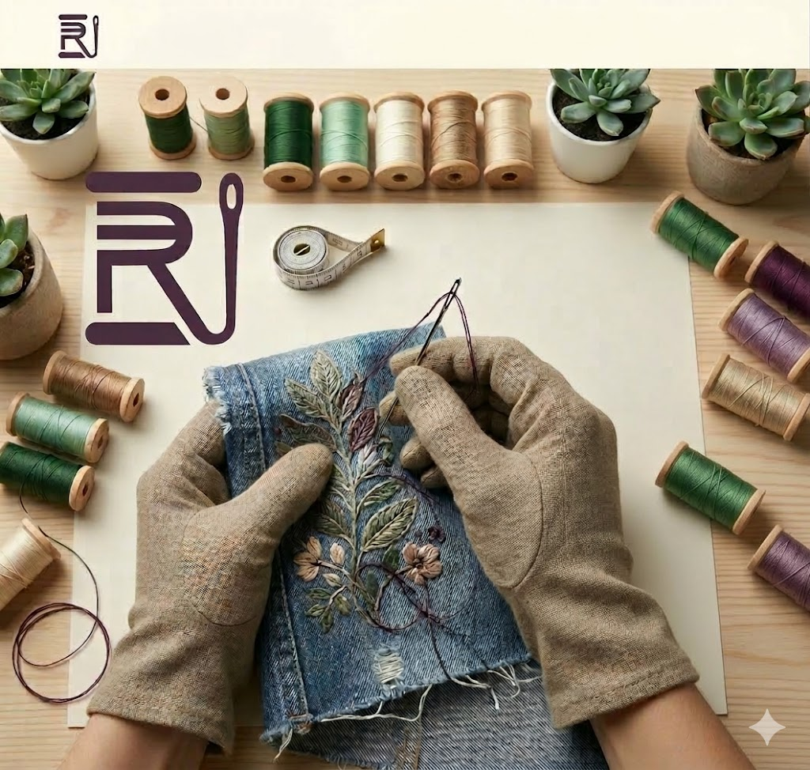

REVIBE es una propuesta de marca enfocada en la reparación, restauración y personalización de prendas de ropa con el objetivo de extender su vida útil y reducir el impacto ambiental de la industria textil. La marca busca combinar la moda urbana con procesos artesanales, permitiendo que cada prenda tenga una segunda vida mediante reparaciones creativas, bordados y rediseños únicos. REVIBE está dirigido principalmente a jóvenes interesados en la moda sostenible, la reutilización de ropa y la expresión personal a través de prendas únicas.
Reducimos desperdicio textil reparando y reutilizando prendas.
Cada reparación es una oportunidad para crear algo único.
Moda personalizada accesible para todos.
REVIBE nace como una propuesta para reducir el desperdicio textil mediante la reparación y transformación de prendas. En lugar de desechar ropa dañada o pasada de moda, REVIBE propone restaurarla y convertirla en piezas únicas. Nuestro objetivo es demostrar que la moda sostenible puede ser accesible, creativa y parte de la cultura urbana.

$450 MXN

$320 MXN

$680 MXN

$520 MXN
Arreglos de roturas, cremalleras y desgaste.
Transforma prendas antiguas en algo nuevo.
Entallado y modificación de tallas.
¿Quieres transformar tu prenda?
Email: revibe.proyecto@gmail.com
Instagram: @revibe.studio